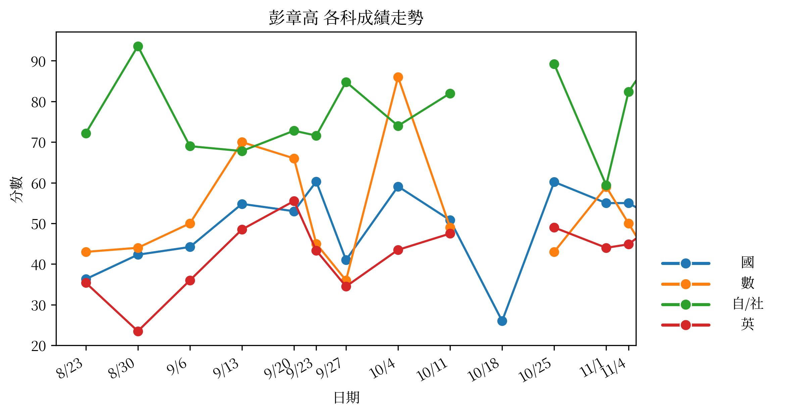

| 科目 | 日期 | 個人分數 | 班級平均 | 差距指標 (Z) |
|---|---|---|---|---|
| 國 | 11/08 | 50.9 | 63.2 | -1.01 |
| 數 | 11/08 | 38.0 | 58.7 | -1.13 |
| 自/社 | 11/08 | 93.0 | 102.8 | -0.62 |
| 英 | 11/08 | 50.5 | 74.6 | -1.33 |
* Z分數 < -0.3 表示落後班平均超過 0.3 個標準差。
| 科目 | 近期考試次數 | 平均 Z 分數 | 狀態 |
|---|---|---|---|
| 國 | 3 | -0.60 | 持續低於班平均 |
| 數 | 3 | -0.50 | 持續低於班平均 |
| 自/社 | 3 | -0.55 | 持續低於班平均 |
| 英 | 3 | -1.37 | 持續低於班平均 |
* 若連續多次考試平均 Z 分數低於 -0.3，系統將列入關注。